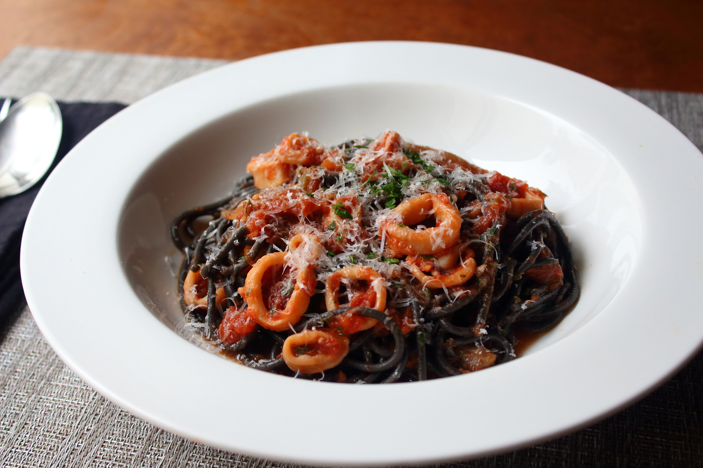

Calamari Marinara

Ingredients
- 1 tablespoon olive oil
- ½ yellow onion, sliced thin
- ½ serrano chile pepper, sliced thin
- 1 ½ garlic cloves, crushed or minced
- ½ anchovy fillet
- ¼ teaspoon red pepper flakes
- ¼ teaspoon kosher salt, plus more as needed
- ¼ cup dry white wine
- ½ cup clam juice
- 3 cups crushed or pureed Italian plum tomatoes
- ¼ teaspoon dried oregano
- 1 pounds frozen calamari (tubes and tentacles), thawed, sliced into 1/2-inch pieces
- 2 tablespoons freshly chopped Italian parsley
- ½ tablespoon Freshly grated Parmigiano-Reggiano cheese
- ½ (16 ounce) package dry pasta
Directions
- Drizzle olive oil into saucepan (not over heat). Add onions, Serrano pepper, garlic, anchovy filet, red pepper flakes, and salt. Place pot over medium-high heat. When onions start to sizzle after a minute or so, stir and cook until onions and garlic just start to turn golden, 3 or 4 minutes. Stir in wine.
- Cook until wine is reduced by about half, 3 to 5 minutes. Add clam juice, tomatoes, and oregano. Bring to a simmer over medium-high heat. When sauce begins to bubble, reduce heat to medium-low. Simmer gently for about 15 minutes.
- Transfer calamari to sauce pot; stir gently. Simmer until calamari are tender, 35 to 45 minutes. Remove from heat. Stir in parsley.
- Bring a large pot of lightly salted water to a boil. Cook spaghetti in the boiling water, stirring occasionally until tender yet firm to the bite, about 12 minutes. Drain.
- Stir some sauce into the hot, drained pasta. Serve in warm bowls topped with more marinara sauce and grated cheese.
Preperation
- Prep: 15 mins
- Cook: 56 mins
- Total: 1 hr 11 mins
- Servings: 4
- Yield: 4 servings
Nutrition Info (Per Serving)
- Energy: 806 calories
- protein 53.4g
- carbohydrates 117.8g
- fat 12.2g
- cholesterol 3.8mg
- sodium 921.2mg